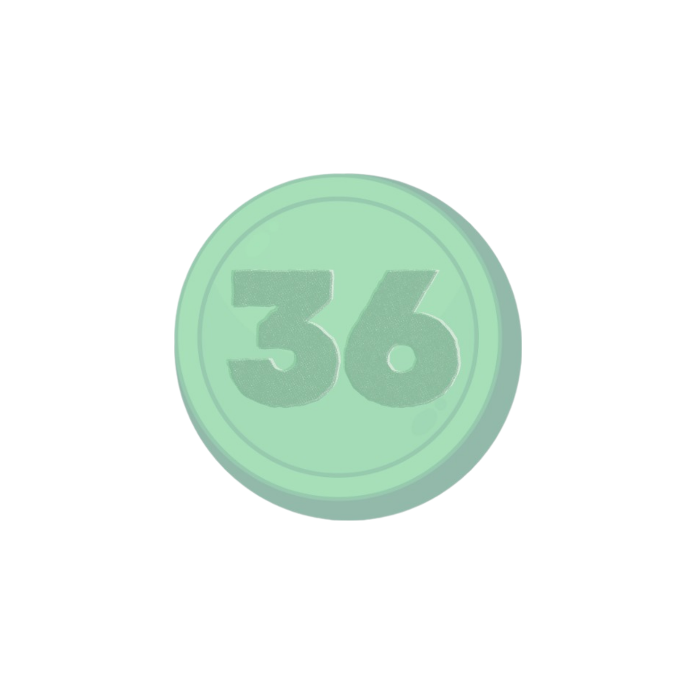
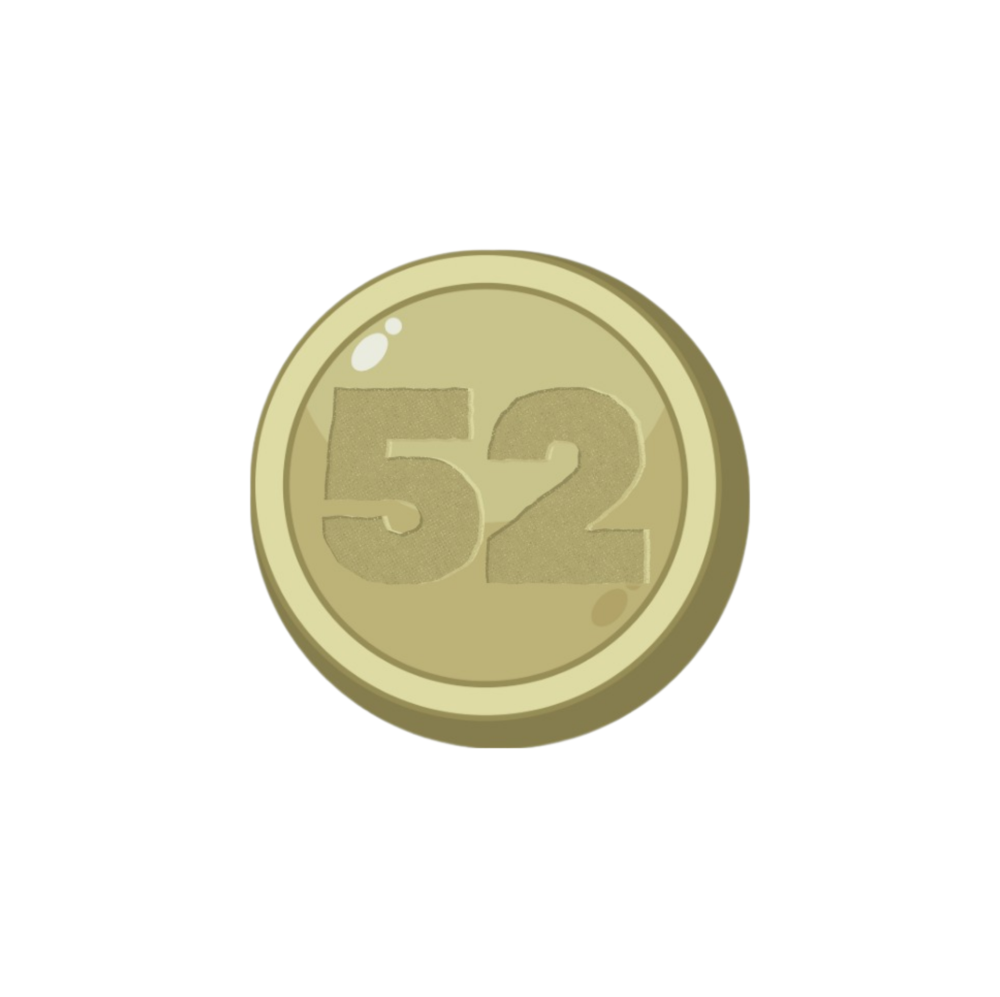
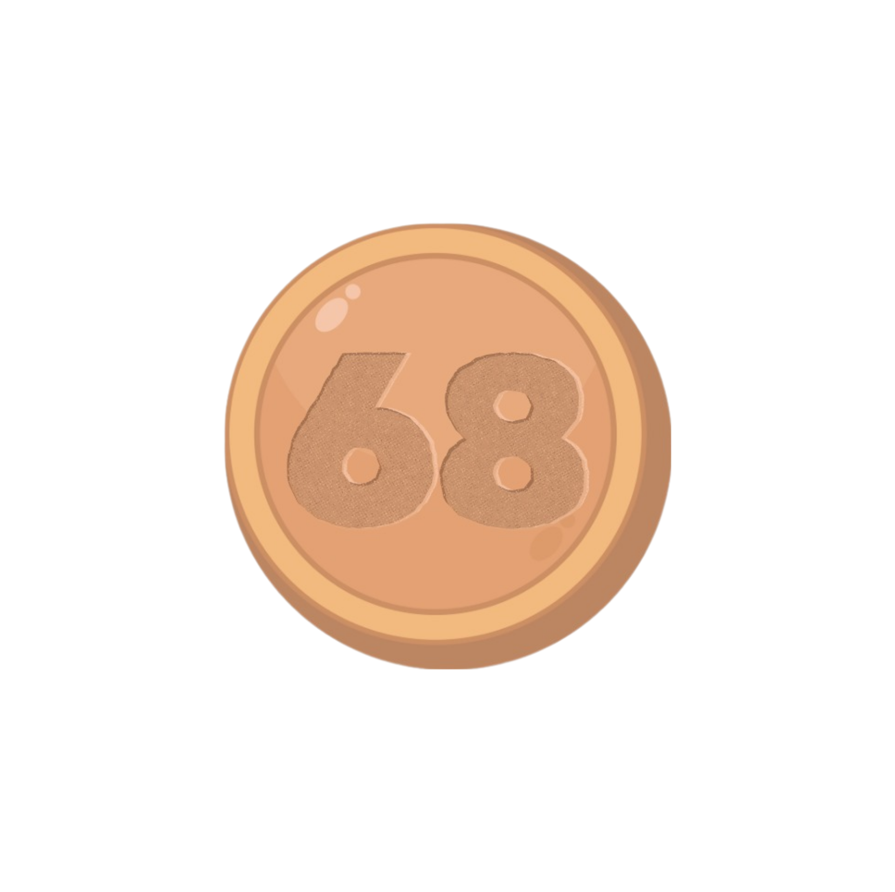

Ingresa tu nombre de usuario
¡TU PUNTAJE!
  
El Complejo Cultural Los Pinos, anteriormente Residencia Oficial de Los Pinos y referido coloquialmente como Los Pinos, fue la residencia del Presidente de los Estados Unidos Mexicanos desde 1934 hasta el 30 de noviembre de 2018.
Ingresa tu nombre de usuario